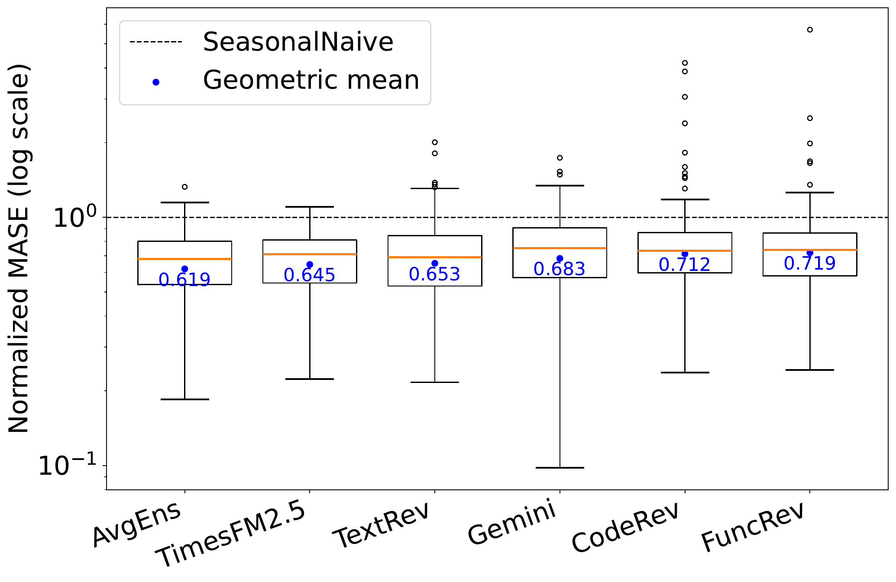
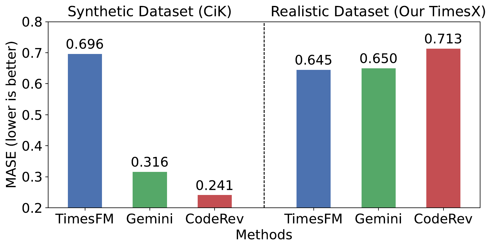
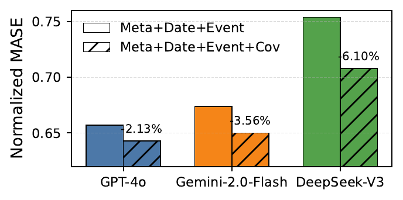
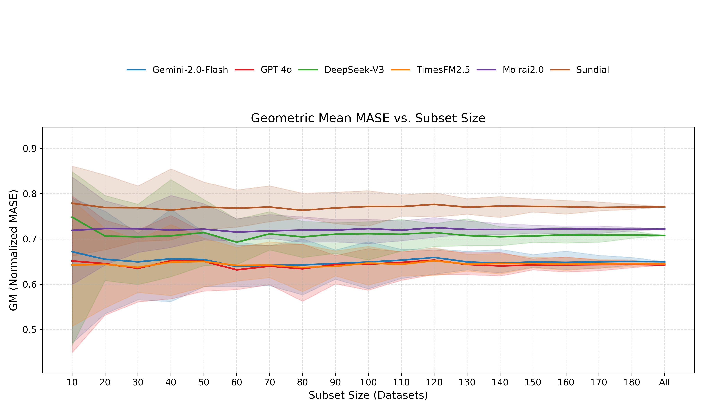
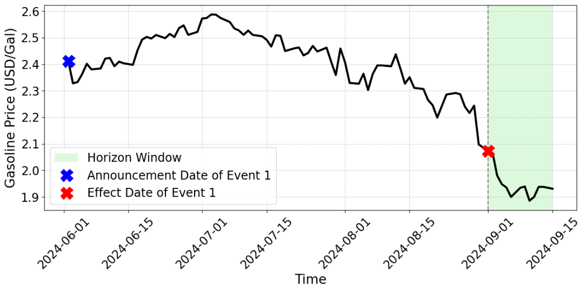

Overview
A benchmark built for realistic multimodal forecasting
TimesX studies how pretrained time-series foundation models and language models behave when forecasts require both historical numeric signals and natural-language context such as metadata, calendar effects, covariates, and time-stamped events.
Benchmark Design
Real data, strict time isolation, and detailed context
Real-world observations
TimesX is constructed from real time series and real textual information rather than synthetic time series or synthetic contexts.
Leakage-aware evaluation
Evaluation examples are selected with strict temporal isolation and can be refreshed as model knowledge cutoffs move forward.
Context-rich forecasting
Each variable is paired with metadata, calendar information, covariate summaries, and time-stamped event narratives.
Cross-domain scale
The benchmark covers daily and weekly series across public interest, commodity, exchange-rate, and other domains.

Construction Pipeline
Hypothesize, verify, enrich, and synthesize event context
The textual event pipeline uses constrained LLM agents and time-bounded retrieval to discover candidate events, verify sources and timestamps, enrich missing details, and synthesize grounded event narratives.

Findings
TimesX reveals gaps hidden by earlier benchmarks




Citation
BibTeX
@inproceedings{liu2026timesx,
title = {Rethinking Multimodal Time-Series Forecasting Evaluation},
author = {Liu, Haoxin and Zhou, Yichen and Sen, Rajat and
Prakash, B. Aditya and Das, Abhimanyu},
booktitle = {Proceedings of the 43rd International Conference on Machine Learning},
year = {2026}
}